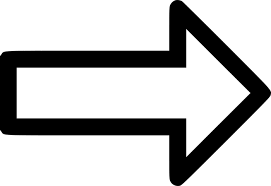

.jpg "Ван Гог «Ночное кафе»")
Картина «Ночное кафе» была написана художников в сентябре 1888 года. На протяжении трех ночей Винсент Ван Гог посещал привокзальное кафе в городе Арль на юге Франции, наблюдая за ночными посетителями, бесцельно проводящими свое время за выпивкой. Нечеткость линий, небрежность мазков, размытые лица посетителей кафе свидетельствуют о стремлении автора передать состояние не трезвого человека. Интерьер помещения наполнен массой нюансов, которые, контрастируя друг с другом, доносят депрессивное состояние художника. Зеленый цвет потолка говорит скорее об ощущении болезненности усугубленном тревожностью красных стен, а изобилие теплых тонов желтого цвета добавляет душную и прокуренную атмосферу заведения. Заброшенный бильярдный стол, большое количество бутылок и не опустошенных бокалов на свободных столиках дополнительно подчеркивает заброшенность и ненужность. Ночное время подчеркивается часами, которые показывают, что уже далеко за полночь, ночным пейзажем в окне, ярко горящими четырьмя лампами и засидевшейся парочкой за угловым столиком при входе. Уснувший посетитель, двое изрядно выпивших собеседников усиливают гнетущее впечатление. А завершает эффект посетитель в желтом костюме, который смотрит толи прямо на художника, толи зрителю прямо в глаза. Художник писал своему брату Тео, что в данной картине он старался передать обстановку и пагубную страсть, в которой происходит саморазрушение человека, где он сходит с ума или становится преступником. Эта картина была высоко оценена критиками и удостоилась звания одного из шедевров Ван Гога. Впоследствии она дала жизнь новому стилю – экспрессионизму. Позднее художник повторит ее в акварели. На сегодняшний день картина «Ночное кафе» хранится в Художественной галерее Йельского университета.
